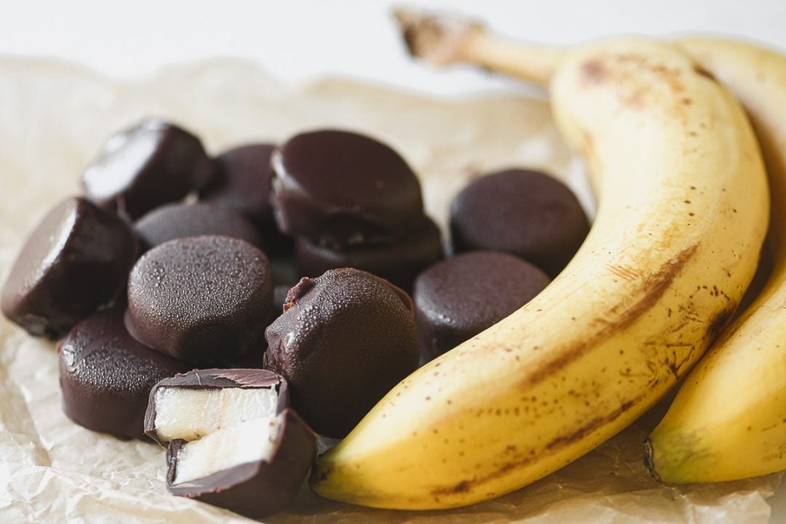

Frozen Greek Yogurt Banana Slices

Description
An easy to make snack, that's convenient to store in the freezer. A good substitute for unhealthy
sweet treats.
Ingredients
- 1 banana
- 1/2 cup greek yogurt
- 1/2 tbsp cacao/cocoa powder
Steps
- Cut one banana up into even pieces.
- Combine greek yogurt and cacao in a bowl.
- Dip bananas into the chocolate yogurt to cover evenly.
- Place the bananas on wax paper and freeze for 2 hours.